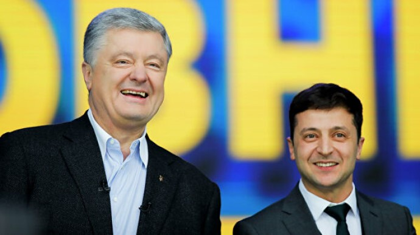
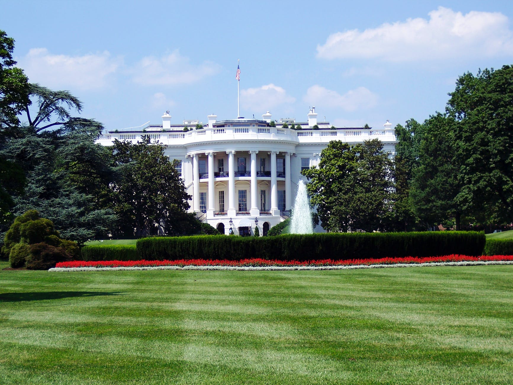
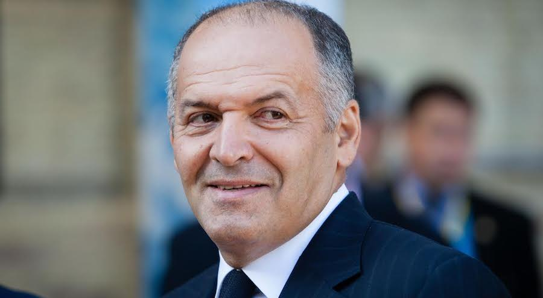
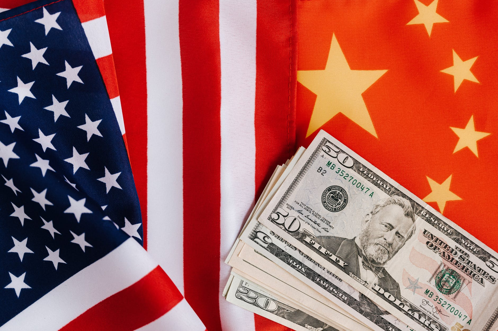
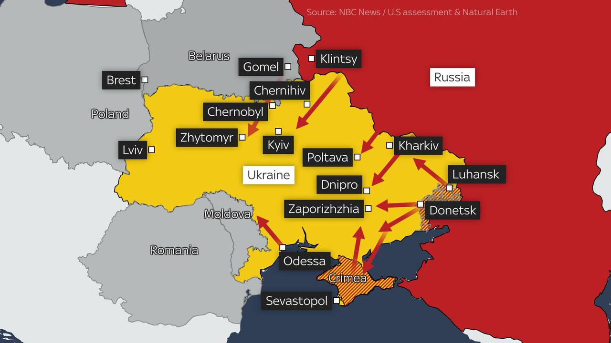

Розрив між Порошенком та Зеленським скоротився: президентські рейтинги у лютому
Українці відповіли, за кого проголосували б на виборах президента
На виборах президента України в першому турі зараз лідирував би чинний глава держави Володимир Зеленський – про це свідчать результати опитування Київського міжнародного інституту соціології. Опитування проводилось з 5 по 13 лютого. За Зеленського проголосували б 19,1% серед усіх респондентів та 25,1% серед тих, хто вже визначився з вибором. На другому місці – Петро Порошенко. За нього висловилися 16,6% серед усіх респондентів і 21,8% серед тих, хто визначився з вибором. Згідно з результатами опитування КМІС про те, які партії готові підтримати українці під час виборів, лідирує партія Петра Порошенка "Європейська солідарність" – її готові зараз підтримати на виборах 15,5% серед усіх респондентів та 22,9% серед тих, хто збирається голосувати. На другому місці провладна "Слуга народу", за яку проголосували б 11,1% серед усіх респондентів та 16,4% серед тих, хто визначився з вибором.
ДжерелоБілий дім: Атака на Україну може розпочатися будь-якої миті
У Вашингтоні попередили про провокації на Донбасі
Ранок 16 лютого не приніс полегшення Вашингтону у зв'язку з тим, що сталося на цей момент у Східній Європі. "Ми підійшли до того моменту, коли, на нашу думку, атака може початися будь-якої миті", – заявила прессекретар Білого дому Джен Псакі, вийшовши до преси. Представниця Білого дому заявила, що вікно для потенційного нападу Росії на Україну залишається відкритим, і попередила, що сфабрикованим приводом для вторгнення можуть бути повідомлення, подібні до тих, що були в середу про масові поховання на Донбасі.
ДжерелоПінчук: За Україну будемо боротися всі разом
Бізнесмен зібрав у Дніпрі членів наглядової ради Ялтинської європейської стратегії
У День єднання, який відзначають в Україні 16 лютого, представники великого українського бізнесу запевнили у своїй готовності боротися за Україну до останнього. Про це, зокрема, заявив бізнесмен Віктор Пінчук у Дніпрі, де зібралися члени наглядової ради Ялтинської європейської стратегії – експрезидент Естонії Керсті Кальюлайд, колишній голова Польщі Олександр Кваснєвський, експрем'єр Швеції Карл Більдт та віцепрезидент Havas Group Стефан Фукс. "Для нас Україна – це єдина наша батьківщина, єдине, що для нас важливе. Це те місце, куди ми інвестуємо, те місце, за яке ми боротимемося всі разом. Бізнес боротиметься за Україну до останнього", – запевнив під час зустрічі Віктор Пінчук.
ДжерелоЧому вночі не було вторгнення в Україну: відповідь The Sun
Напад на Україну мав розпочатися з масованого ракетного удару
15 лютого британське видання The Sun, посилаючись на розвідку США, повідомило, що Російська Федерація має намір вторгнутися в Україну 16 лютого о 02:00 за київським часом. Як зазначало видання, напад мав розпочатися з масованого ракетного удару за участю 200 000 військовослужбовців. Видання також підготувало мапу можливого нападу. Однак пізніше таблоїд відредагував свій матеріал, зазначивши, що ніч, коли очікувалося вторгнення РФ, пройшла без пригод, оскільки "Путін продовжував змушувати Захід гадати".
ДжерелоКитай звинуватив США у підриві економіки України
Представник МЗС Китаю розкритикував нібито роздмухування загрози
У Китаї заявили, що "роздмухування Вашингтоном загрози війни "завдало удару по економіці та соціальній стабільності України. Таку думку висловив офіційний представник Міністерства закордонних справ Китаю Ван Веньбінь, передає ТАРС. "Протягом останніх кількох днів американська сторона роздмухувала загрозу війни, штучно створювала напружену атмосферу, що завдало серйозного удару по економіці, соціальній стабільності та умовах життя народу України, а також посилило опір у просуванні переговорів та діалогу відповідних сторін", – заявив китайський дипломат. Веньбінь висловив сподівання, що західні країни перестануть "поширювати неправдиву інформацію" і почнуть робити більше для сприяння миру, взаємній довірі та співпраці.
Джерело